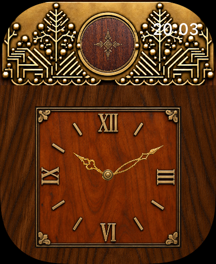

Настенная кукушка.
Теперь на запястье.
Дерево, латунь и маленькая птица за распашной дверцей.
Заведите часы колесиком Digital Crown, посмотрите на маятник и гири, переведите стрелки. Или просто позовите кукушку прямо сейчас — для этого есть демонстрация.

Часы с характером
- Четыре варианта циферблата.
- Ручной завод с запасом на 24 часа виртуального хода.
- Маятник, который можно остановить касанием.
- Автоматический режим с настоящим временем.
- Кукушка с анимацией и записанным боем в открытом приложении.
- Круглое расширение с дверцей для быстрого открытия.
Приложение для Apple Watch с watchOS 10 или новее. На первом запуске часы стоят на 12:00 и ждут, когда вы их заведёте.
Все четыре циферблата доступны бесплатно, без встроенных покупок.
Готовим к выходу в App Store. После релиза здесь появится ссылка на приложение.
«Кукушка» работает как отдельное приложение. Оповещения вне приложения доставляет watchOS; полный бой и анимация воспроизводятся в открытом приложении.